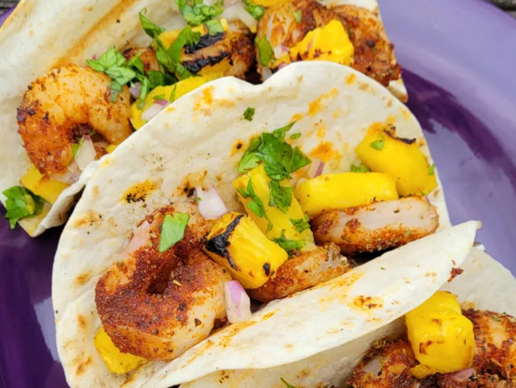

Blackened Shrimp Tacos with Pineapple

These blackened shrimp tacos with pineapple are bright and summery. Shrimp is grilled with a homemade blackened seasoning, and a delicious grilled fresh pineapple salsa tops them off. Add sour cream if you want to cool them down a touch.
Ingredients
Blackened Seasoning Mix
- 2 tablespoons smoked paprika
- 1 tablespoon onion powder
- 1tablespoon dried oregano
- 1 teaspoon cayenne pepper
- 1 teaspoon garlic salt
- 1 teaspoon freshly ground black pepper
Pineapple Salsa
- 1/2 fresh pineapple, peeled and cored
- 1/4 cup chopped red onions
- 1/4 cup chopped cilantro
- 1 lime, juiced
- 1/8 teaspoon salt
Shrimp Tacos
- 1 pound large shrimp, peeled and deveined
- 2 tablespoons melted butter
- 6 (6 inch) flour tortillas
Directions
Step 1
- Preheat an outdoor grill for medium-high heat; lightly oil the grate.Combine paprika, onion powder, oregano, cayenne pepper, garlic salt, and black pepper in a small bowl; set aside.
Step 2
- Cut the pineapple lengthwise into wedges. Grill pineapple wedges for 4 to 5 minutes on each side. Chop pineapple and combine in a bowl with red onions, cilantro, fresh lime juice and salt.
Step 3
- Thread shrimp onto skewers; brush with melted butter, and coat with seasoning mix. Grill shrimp until they are bright pink on the outside and the meat is opaque, about 3 minutes per side.
Step 4
- Place tortillas on the hot grill and heat until lightly grilled, 20 to 30 seconds per side.
Step 5
- Place shrimp on each tortilla and top with pineapple mixture